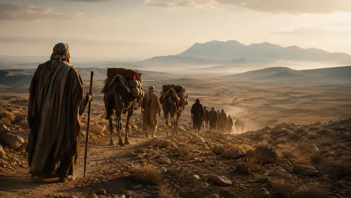
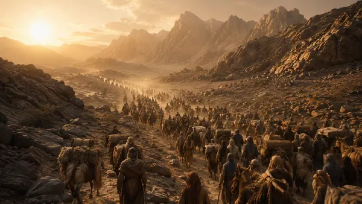
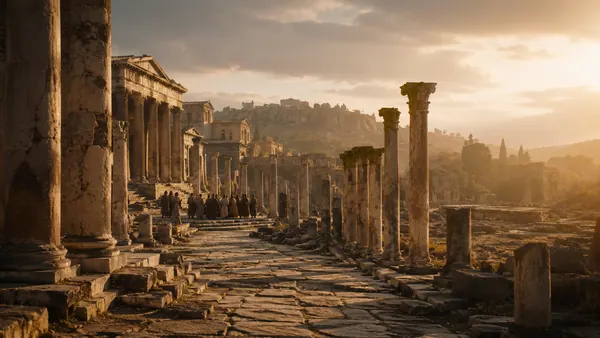
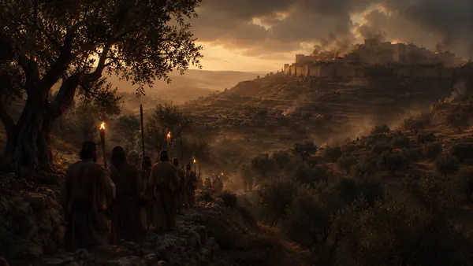
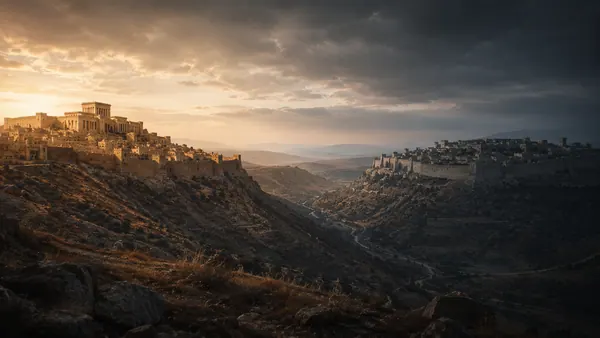
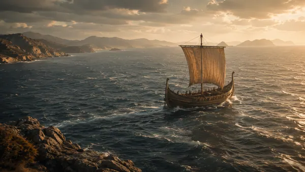
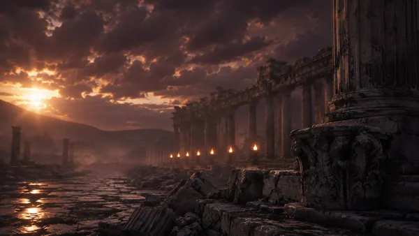
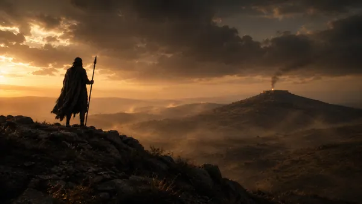
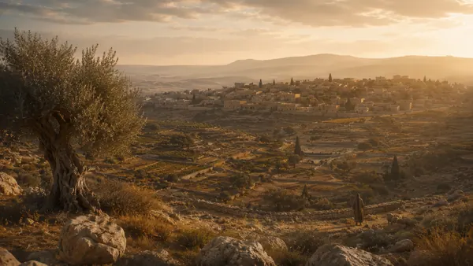
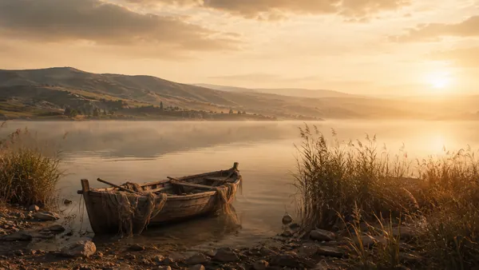

Синхронная шкала из реестров Атласа: наведите курсор на эпоху, правление или событие. Консервативная библейская хронология — ранний Исход 1446 г.; разделённое царство — согласованные даты Тиле.
| Престол | Правитель | Годы | Библейская оценка |
|---|---|---|---|
| Единое царство | Саул | 1050 до Р.Х. — 1010 до Р.Х. | смешанная оценка |
| Единое царство | Давид | 1010 до Р.Х. — 970 до Р.Х. | добрый царь («делал угодное») |
| Единое царство | Соломон | 970 до Р.Х. — 931 до Р.Х. | смешанная оценка |
| Израиль | Иеровоам I | 931 до Р.Х. — 910 до Р.Х. | злой царь («делал неугодное») |
| Израиль | Нават | 910 до Р.Х. — 909 до Р.Х. | злой царь («делал неугодное») |
| Израиль | Вааса | 909 до Р.Х. — 886 до Р.Х. | злой царь («делал неугодное») |
| Израиль | Ила | 886 до Р.Х. — 885 до Р.Х. | злой царь («делал неугодное») |
| Израиль | Замврий | 885 до Р.Х. — 885 до Р.Х. | злой царь («делал неугодное») |
| Израиль | Фамний | 885 до Р.Х. — 880 до Р.Х. | злой царь («делал неугодное») |
| Израиль | Амврий | 885 до Р.Х. — 874 до Р.Х. | злой царь («делал неугодное») |
| Израиль | Ахав | 874 до Р.Х. — 853 до Р.Х. | злой царь («делал неугодное») |
| Израиль | Охозия Израильский | 853 до Р.Х. — 852 до Р.Х. | злой царь («делал неугодное») |
| Израиль | Иорам Израильский | 852 до Р.Х. — 841 до Р.Х. | злой царь («делал неугодное») |
| Израиль | Ииуй | 841 до Р.Х. — 814 до Р.Х. | смешанная оценка |
| Израиль | Иоахаз Израильский | 814 до Р.Х. — 798 до Р.Х. | злой царь («делал неугодное») |
| Израиль | Иоас Израильский | 798 до Р.Х. — 782 до Р.Х. | злой царь («делал неугодное») |
| Израиль | Иеровоам II | 793 до Р.Х. — 753 до Р.Х. | злой царь («делал неугодное») |
| Израиль | Захария Израильский | 753 до Р.Х. — 752 до Р.Х. | злой царь («делал неугодное») |
| Израиль | Селлум | 752 до Р.Х. — 752 до Р.Х. | злой царь («делал неугодное») |
| Израиль | Менаим | 752 до Р.Х. — 742 до Р.Х. | злой царь («делал неугодное») |
| Израиль | Факей | 752 до Р.Х. — 732 до Р.Х. | злой царь («делал неугодное») |
| Израиль | Факия | 742 до Р.Х. — 740 до Р.Х. | злой царь («делал неугодное») |
| Израиль | Осия Израильский | 732 до Р.Х. — 722 до Р.Х. | злой царь («делал неугодное») |
| Иудея | Ровоам | 931 до Р.Х. — 913 до Р.Х. | злой царь («делал неугодное») |
| Иудея | Авия | 913 до Р.Х. — 911 до Р.Х. | злой царь («делал неугодное») |
| Иудея | Аса | 911 до Р.Х. — 870 до Р.Х. | добрый царь («делал угодное») |
| Иудея | Иосафат | 872 до Р.Х. — 848 до Р.Х. | добрый царь («делал угодное») |
| Иудея | Иорам Иудейский | 853 до Р.Х. — 841 до Р.Х. | злой царь («делал неугодное») |
| Иудея | Охозия Иудейский | 841 до Р.Х. — 841 до Р.Х. | злой царь («делал неугодное») |
| Иудея | Гофолия | 841 до Р.Х. — 835 до Р.Х. | злой царь («делал неугодное») |
| Иудея | Иоас Иудейский | 835 до Р.Х. — 796 до Р.Х. | смешанная оценка |
| Иудея | Амасия | 796 до Р.Х. — 767 до Р.Х. | смешанная оценка |
| Иудея | Озия | 792 до Р.Х. — 740 до Р.Х. | добрый царь («делал угодное») |
| Иудея | Иофам | 750 до Р.Х. — 732 до Р.Х. | добрый царь («делал угодное») |
| Иудея | Ахаз | 735 до Р.Х. — 715 до Р.Х. | злой царь («делал неугодное») |
| Иудея | Езекия | 715 до Р.Х. — 686 до Р.Х. | добрый царь («делал угодное») |
| Иудея | Манассия | 697 до Р.Х. — 642 до Р.Х. | злой царь («делал неугодное») |
| Иудея | Амон | 642 до Р.Х. — 640 до Р.Х. | злой царь («делал неугодное») |
| Иудея | Иосия | 640 до Р.Х. — 609 до Р.Х. | добрый царь («делал угодное») |
| Иудея | Иоахаз Иудейский | 609 до Р.Х. — 609 до Р.Х. | злой царь («делал неугодное») |
| Иудея | Иоаким | 609 до Р.Х. — 598 до Р.Х. | злой царь («делал неугодное») |
| Иудея | Иехония | 598 до Р.Х. — 597 до Р.Х. | злой царь («делал неугодное») |
| Иудея | Седекия | 597 до Р.Х. — 586 до Р.Х. | злой царь («делал неугодное») |
66 книг канона. Золотые карточки — книга уже покрыта картой Атласа; наведите курсор, чтобы увидеть какой.
Шесть архетипов карт Атласа — от маршрутов патриархов до планов городов.
карт пока нет — направление открывается каталогом
карт пока нет — направление открывается каталогом
Обложки-миниатюры — живые карты (клик — открыть); пунктирные чипы — целевой каталог §9, волны KA-6…KA-9.
Живой инвентарь: счётчики — из базовой линии контент-паритета (гейт G6).

на витрине
production · вне витрины
на аудите
на аудите
на аудите
на аудите
на аудите
на аудите
на аудите
на аудитеHero-зоны карточек готовы под обложки-сцены (images/atlas-<slug>-scene-600w.webp, VISUAL-DIRECTION §8.2): файл появится — карточка подхватит его при перегенерации автоматически.
Канонический реестр мест на реальной подложке движка. Фирменная честность §3: точка показывает не только «где», но и «насколько уверенно мы это знаем».
В кадре 47 мест семейства levant (размер точки — число карт с местом; наведите курсор — статус и карты). Честно за кадром: 18 регионов (уделы колен и т.п.) появятся ПОЛИГОНАМИ в KA-6 — точкой их не изображаем; 7 суб-локаций (Горница, Гефсимания…) — на городских планах; 14 средиземноморских мест (Павел, семь церквей) — в семействе mediterranean со своей подложкой. Подложка — художественная развёртка base-geo.svg (не строгая проекция; линейка масштаба — приближение).